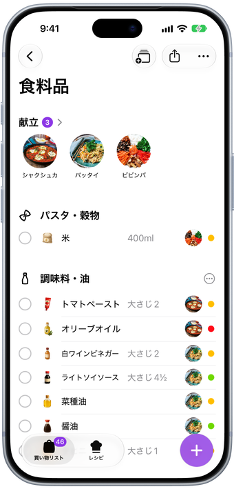
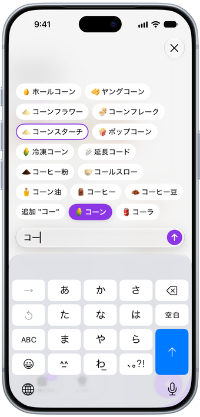
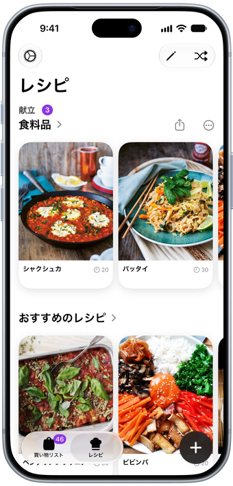
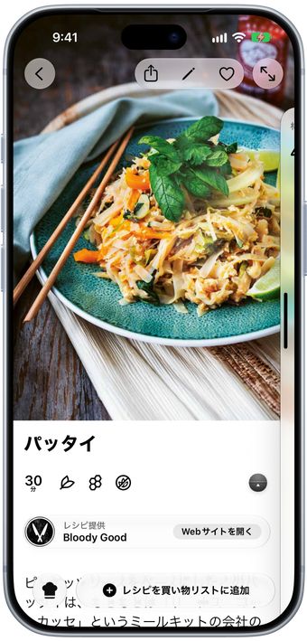
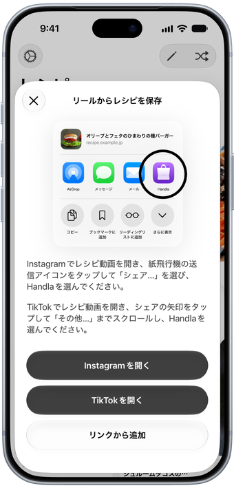
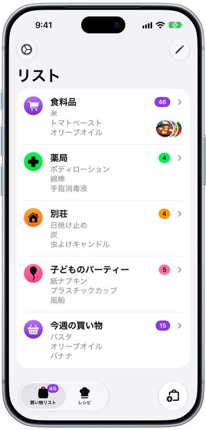
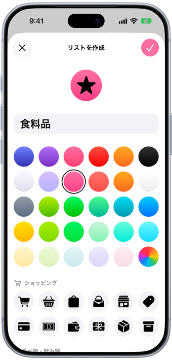
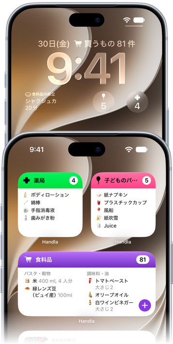
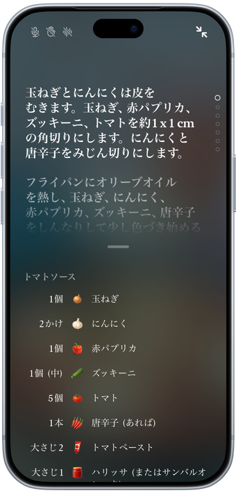
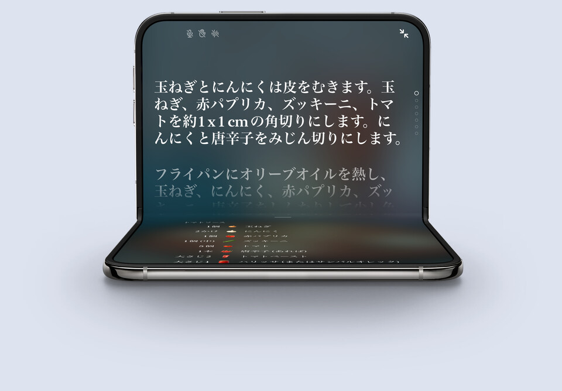

買い物リストと献立がひとつに
レシピから買い物リストへ、売り場ごとに自動で整理。
レシピから買い物リストへ、売り場ごとに自動で整理。
アイテムは自動で売り場ごとに分かれ、それぞれにイラストが付きます。献立はいちばん上に表示されます。

数文字入力するだけで、Handlaが入れたいものを候補に出します。よく買うものほど覚えていきます。

レシピページ、Instagramのリール、TikTokのリンクを貼り付けるだけで、Handlaが材料ごと保存します。

レシピを追加すると、作る人数に合わせた分量で、材料がそのままリストに入ります。

InstagramやTikTokでレシピを見つけたら、そのアプリからHandlaに共有するだけ。レシピに追加されます。

食料品、ドラッグストア、別荘の買い出し。リストごとに名前、色、アイコンを設定できます。

リストの色とアイコンを数十種類から選び、アプリアイコンもおそろいにできます。

リストや献立をホーム画面に、次の食事をロック画面に表示できます。

全画面の調理モードで、どのステップにもタイマー付き。ステップを読み上げ、手を挙げるとページをめくります。

開くと大きなディスプレイいっぱいに。 レシピを開いたまま折りたたむと、調理モードに切り替わります。

Handlaは、iPhone、iPad、iPhone Duo向けの買い物リストアプリです。数文字入力して候補を選ぶと、アイテムがイラスト付きで正しい売り場に入ります。買い物しながらチェックしていけば、店内を進むにつれてリストが短くなっていきます。
作る料理が決まっているなら、レシピを追加しましょう。材料がリストに入り、レシピは献立としてリストに残ります。ステップにはタイマーが組み込まれているので、調理を始めたらすぐに使えます。
Handlaは、アイテム10個までのリストなら無料でダウンロードして使えます。7日間の無料トライアル付きのApp内サブスクリプション「Handla Premium」に登録すると、上限がなくなり、リストをいくつでも作れて、レシピも無制限に保存できます。価格は登録前に必ずアプリ内に表示され、いつでも解約できます。
追加したアイテムは、青果、乳製品、パンなどの売り場ごとに分けられるので、店内を行ったり来たりせず、一度回るだけで済みます。売り場はドラッグして、いつものお店の順番に並べ替えられます。
はい。リストはテキストとして、メッセージやメールなどのアプリで誰にでも送れますし、印刷もできます。レシピや献立はまるごとリンクで共有でき、写真ありでも、インクを節約したいときは写真なしでも印刷できます。共有で送られるのはコピーなので、相手とリストが同期されることはありません。
はい。レシピをリストに追加すると、材料が売り場ごとに分けられ、作る人数に合わせた分量でそのままリストに入ります。レシピは献立としてリストに残るので、料理を始めるときにすぐ開けます。
はい。レシピページ、Instagramのリール、TikTokのリンクを貼り付けるか、SafariやそのアプリからHandlaに共有すると、Handlaが材料と作り方ごとレシピを保存します。
はい。全画面の調理モードでは、各ステップを読み上げ、「次のステップ」などの音声コマンドを聞き取り、手を挙げるとページをめくります。タイマーはステップに組み込まれているので、ワンタップでスタートできます。
はい。リストや献立をホーム画面に置いたり、次の食事やリストのアイテム数をロック画面に表示したりできます。
はい。HandlaはiPhone、iPad、iPhone Duoのために作られています。Duoを開くとリストが大画面いっぱいに広がり、表示を切り替えられるサイドバーと、広い画面に合わせたカードレイアウトも使えます。
英語、スウェーデン語、デンマーク語、ドイツ語、スペイン語、フィンランド語、フランス語、アイスランド語、日本語、ノルウェー語、オランダ語に対応しています。食料品の名前も翻訳されています。
いいえ。HandlaはiPhoneとiPad向けのアプリです。
hello@filibaba.comまでお気軽にご連絡いただくか、サポートをご覧ください。いただいたメッセージにはすべて目を通しています。